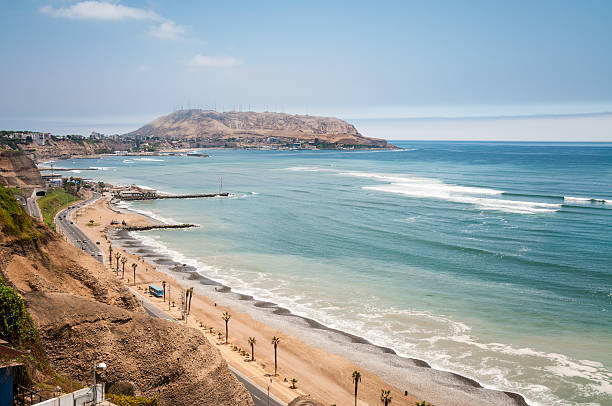

The Coast Region

The Peruvian coast is characterized by its incredible culinary diversity, with dishes that combine seafood and desert produce. Highlights include ceviche, seafood rice, lomo saltado, and many more. But the coast doesn't just captivate with its flavor — it also enchants with its landscapes and warm climate. From the beaches of Máncora to the cliffs of Lima, every corner invites you to enjoy the sea, the breeze, and good food. Its coastal towns are brimming with life, music, and tradition, reflecting the joyful spirit of modern Peru.